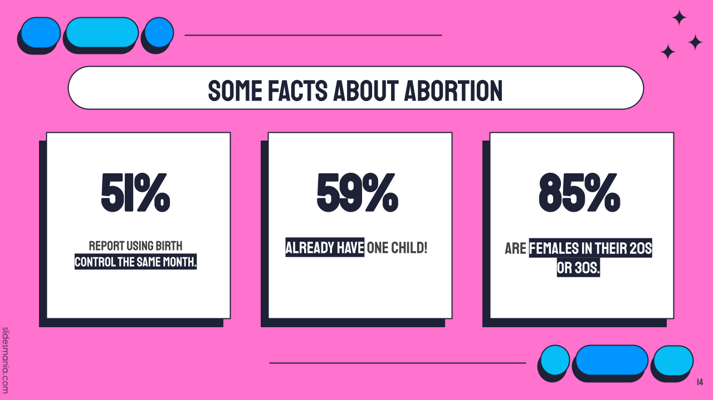

Reproductive Rights Hub
Abortion Storytelling
2+ Abortions Worldwide is a platform that shares personal stories of individuals who have had two or more abortions, aiming to reduce stigma surrounding abortion. It provides a supportive space for people to tell their stories, share resources, and educate others about abortion experiences. The website also includes information on second-trimester abortions, stories from people of faith, and resources for emotional support. Its mission is to normalize the conversation around abortion and empower individuals.
#ShoutYourAbortion is a movement that aims to normalize abortion through storytelling and activism. It offers resources for individuals seeking abortion care, including information about at-home abortion and access to pills. The site encourages people to share their abortion stories, educate their communities, and participate in actions supporting reproductive rights.
Stories for Choice is a project by TMI Project, invites individuals to share personal stories about abortion to reduce stigma and highlight the diverse experiences people face. The project seeks to elevate voices of those who've had abortions, promoting empathy and understanding. Through storytelling, it aims to foster a supportive environment for abortion access and reproductive rights.
inroads (International Network for the Reduction of Abortion Discrimination and Stigma) is a global network dedicated to reducing abortion stigma and discrimination. It provides resources, grants, and support for community organizations working to advance abortion justice. The organization builds solidarity, amplifies voices in the abortion rights movement, and promotes cross-movement power building. Inroads focuses on intersectionality, helping grassroots groups in over 47 countries with funding and advocacy to combat abortion stigma.
ACLU (American Civil Liberties Union) advocates for reproductive freedom, emphasizing the importance of protecting abortion access and fighting against restrictions. The organization works through litigation and advocacy to ensure the constitutional right to abortion remains secure, addressing issues like state bans, clinic regulations, and the fight for federal protections. The ACLU supports abortion access as a private decision, free from political interference, and encourages public engagement in defense of reproductive rights.
Rise Up 4 Abortion Rights is a grassroots organization demanding legal abortion on demand, without apology, nationwide. It organizes protests, campaigns, and public actions to combat abortion restrictions and highlight the intersection of reproductive rights and broader social justice issues.
Abortion Access Front is an organization that uses humor, pop culture, and activism to advocate for reproductive rights. It supports abortion clinics through both emotional and practical assistance, organizes events, and mobilizes communities to fight against anti-abortion movements.
Repro Action is an advocacy organization focused on increasing access to abortion and advancing reproductive rights through strategic communications, community organizing, and direct action. The site provides resources on self-managed abortion, abortion pills, and emergency contraception. It also tracks the finances of anti-abortion pregnancy centers.
Expose Fake Clinics is a national initiative dedicated to revealing the deceptive practices of fake reproductive health centers, commonly known as crisis pregnancy centers (CPCs). These centers often masquerade as legitimate medical facilities but primarily aim to dissuade individuals from seeking abortions through misinformation and coercion.
National Network of Abortion Funds is a collective of grassroots organizations dedicated to ensuring abortion access for individuals across the U.S. The site offers resources for those seeking abortion services, including a directory of local abortion funds, financial assistance, and legal information.


Google News
Toolkits
Trans Pregnancy

Guttmacher Institute


Abortion Pills
INeedAnA is a resource designed to help individuals in the U.S. access abortion services, offering information about clinics, abortion pills by mail, and state laws. The site prioritizes user privacy, with no data storage or tracking.
Abortion Finder helps individuals locate abortion providers in the U.S., offering an easy-to-use clinic locator based on location. The site includes information on different types of abortion procedures, financial assistance, and support for those seeking care.
Aid Access offers online access to abortion pills and miscarriage treatment, providing confidential services for individuals in all 50 U.S. states. The site allows users to order pills for $150 or less, with prescriptions issued by U.S. abortion providers.
Plan C Pills offers resources on how to access and use abortion pills safely and effectively. The site includes detailed instructions on how to take the pills, along with helpful tools like a multilingual chatbot called Ally for guidance. It also offers a step-by-step guide and resources in multiple languages.
Just The Pill offers confidential and private abortion services, providing medication abortion by mail or through mobile clinics. Users can access telemedicine consultations with licensed clinicians, with medications like abortion pills delivered directly to their homes.
Hey Jane offers online abortion care with a focus on providing the abortion pill to individuals up to 10 weeks pregnant. This process is supported through virtual consultations with medical professionals, who guide patients through the steps of the medication, offer ongoing support, and ensure safe use of the medications.
Women on Web is an organization that provides access to safe abortion pills by mail for people worldwide. It offers resources about abortion pills, including how to use them, their safety, and potential side effects.
- All Options is a nonprofit organization dedicated to providing unconditional, judgment-free support for individuals navigating experiences related to pregnancy, parenting, abortion, and adoption. The Talkline operates Monday through Friday from 10-1am, and Saturday through Sunday from 10-6pm EST. The number is 1-888-493-0092.
- Elevated Access is a non-profit organization that provides free transportation to individuals seeking essential healthcare services, particularly abortion and gender-affirming care. Through a network of vetted volunteer pilots, they offer private flights to help clients access necessary medical treatments across the United States.


The United States of Abortion Mazes
Audio & Podcasts